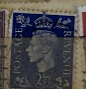
| SOURCE | TITLE| IMAGE MATCH | click to source page |
| HipStamp | Great Britain #239 2 1/2p King George VI | Great Britain, General Issue Stamp / HipStamp |  |
| eBay | ENGLAND KGI 2 1/2 d blue used STAMP | eBay | 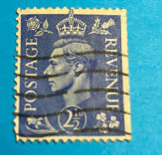 |
| eBay | WWII New Zealand Stamps for sale | eBay | 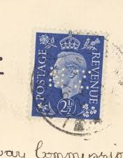 |
| HipStamp | Great Britain #239 2 1/2P King George 6, used VF | Great Britain, General Issue Stamp / HipStamp | 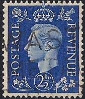 |
| HipStamp | Great Britain #239 2 1/2P King George 6, used VF | Great Britain, General Issue Stamp / HipStamp | 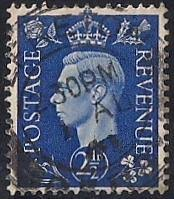 |
| eBay | BRITISH OCCUPIED Middle East Forces King George VI 2½d M.E.F Overprint Used | eBay |  |
| eBay UK | Royalty Machine Cancel Great Britain George VI Stamps for sale | eBay UK |  |
| eBay | Blue stamp 2 1/2 Penny King George VI | eBay | 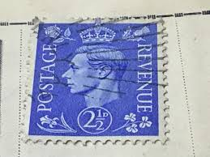 |
| Mercari | 1950s Queen Elizabeth II▪︎Great Britain | Mercari | 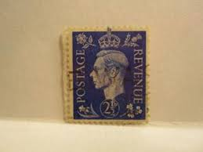 |
| eBay | Royalty 1p British George VI Stamps for sale | eBay | 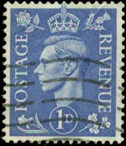 |
| eBay | Used 1/- Denomination British George VI Stamps for sale | eBay |  |
| eBay UK | Good (G) Pre-Decimal Used Great Britain George VI Stamps for sale | eBay UK | 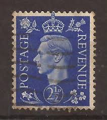 |
| HipStamp | GB George VI SG 466 Used | Great Britain, General Issue Stamp / HipStamp | 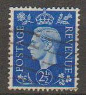 |
| HipStamp | Great Britain #262 2 1/2P King George 6, used VF | Great Britain, General Issue Stamp / HipStamp | 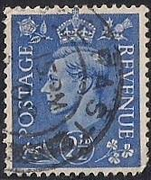 |
| HipStamp | UK 262: 2.5d King George VI, used, F-VF | Great Britain, General Issue Stamp / HipStamp | 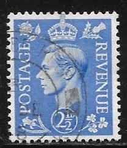 |
| Etsy | King George VI Stamp: 1937 Red Brown 1 1/2 Penny, Scott #237 - Etsy | 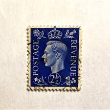 |
| eBay | Las mejores ofertas en Estampillas británicas de Jorge VI Azul | eBay |  |
| HipStamp | Great Britain #262 2 1/2P King George 6, used F-VF | Great Britain, General Issue Stamp / HipStamp |  |
| eBay | D Used United States Stamps for sale | eBay | 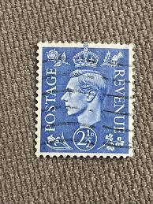 |
| eBay | 1d Denomination British George VI Stamps | eBay | 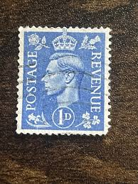 |
| eBay | 2.5p Denomination George VI (1936-1952) British Stamps | eBay | 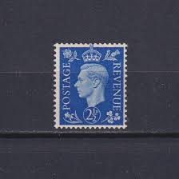 |
| Alexander Historical Auctions | Lot - (GERMAN POSTAL HISTORY) FORGED "BRITISH" PROPAGANDA STAMP |  |
| mancryfmf.com | Cinderellas, part four: Illegal stamps! 1. Introduction – FMF STAMP PROJECT | 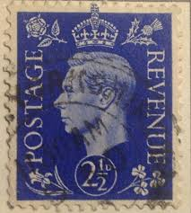 |
| PicClick UK | RARE BLUE STAMP 2 1/2 Penny King George VI £78.70 - PicClick UK |  |
| YouTube | Stamps collection # Great Britain 🇬🇧 # King George 6 # blue, red,brown, green - YouTube |  |
| Postal Stamps 1941 - 1948 Great Britain King George VI 2 and half d. United Kingdom British Collectible #All #KingGeorgeVIStamps #Stamps | 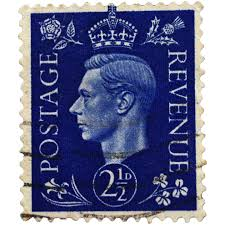 | |
| classicworldcoins.co.uk | George VI Stamps – Classic World Coins | 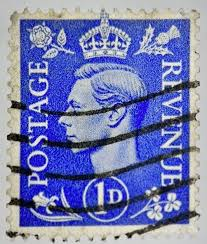 |
| HipStamp | Great Britain 1937-7 Different-Very OLD King George Vi-Used Stamps | Great Britain, Stamp / HipStamp | 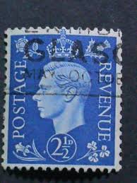 |
| eBay | Postage Revenue ~ King George VI ~ Blue 2½D Stamp ~ Posted/Used ~ c.1940's ~ A05 | eBay | 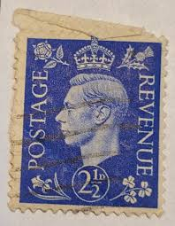 |
| perfinmania.hu | PUNCH:S&Co – perfinmania | 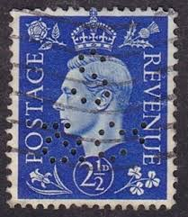 |
| HipStamp | Great Britain #262 2 1/2P King George 6, used F-VF | Great Britain, General Issue Stamp / HipStamp | 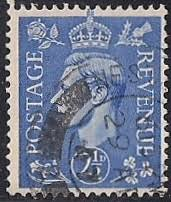 |
| PicClick UK | KING GEORGE VI stamp Selection £4.38 - PicClick UK | 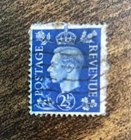 |
| eBay UK | Postage Revenue Stamp for sale | eBay UK | 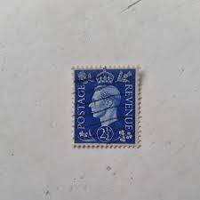 |
| eBay | Great Britain SG#466-PERFIN-SLO- KILBURN 19/NOV/1941 SUN LIFE ASSURANCE SOCIETY | eBay |  |
| PicClick | LOT OF 20 King George Vi 2 1/2 D Postage Stamps Great Britain - U Ww 2 Era $15.99 - PicClick |  |
| eBay | Great Britain 239 Used - King George VI - Watermark Inverted SG 466wi | eBay | 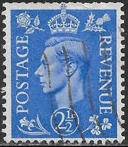 |
| Etsy | GB King George VI 2 1/2d Stamp; Collectible, 1941, Light Cancel - Etsy Singapore | 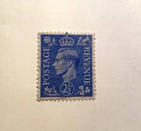 |
| Stamp Community Forum | Mef (Middle Eastern Forces) - Stamp Community Forum | 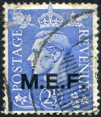 |
| eBay | King George vi postage revenue 2 1/2 D | eBay | 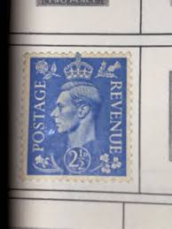 |
| eBay | GREAT BRITAIN SCOTT# 239a - USED - CAT VAL $32.50 | eBay | 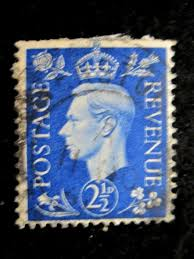 |
| Alamy | King george vi postage stamp hi-res stock photography and images - Alamy | 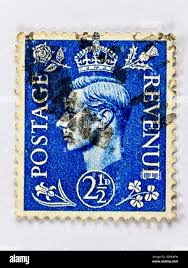 |
| eBay | 1937 Großbritannien MiNr 202x SG466 Gestempelt mit Falz | eBay | 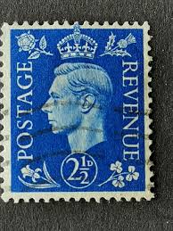 |
| Shutterstock | Germany Circa 1977 Stamp Printed Germany Stockfoto 195627065 | Shutterstock | 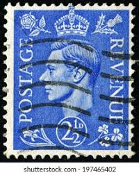 |
| eBay | Great Britain - 1937 - 2 ½ D - King George VI - #18301 | eBay | 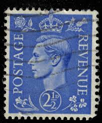 |
| innlite.com | Queen Victoria And King George stamps all three in the antique vintage 1800s to 1900 Early | 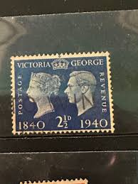 |
| PicClick UK | KING GEORGE VI registered letter envelope, embossed 5 1/2d postage stamp, 1947 £9.49 - PicClick UK | 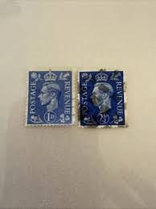 |
| eBay UK | British George VI (1936-1952) Era Postal Stationery for sale | eBay UK | 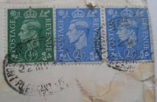 |
| eBay | Great Britain 1937-2 1/2D Blue Revenue/Postage-Used Single | eBay |  |
| eBay | GB KGVI 2 1/2d with BTH perfin on cover to USA | eBay | 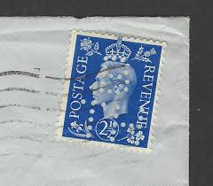 |
| Doreen Royan & Associates | Great Britain SG Spec. Q6 var. 1951 1d. light ultramarine. Pair. IMPERF. IMPRIMATURS. SUM. - Doreen Royan & Associates (Pty) Ltd | 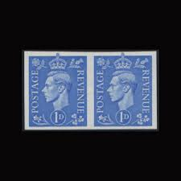 |
| Blogger.com | Great Britain Philately |  |
| eBay | Postage Revenue British 1 D Blue Stamp King George Used - TKS208* | eBay | 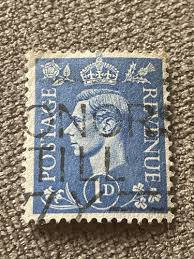 |
| HipStamp | British Stamps:very OLD FDC 1940 SC# 252-6 :Victoria & Grorge VI | Great Britain, General Issue Stamp / HipStamp | 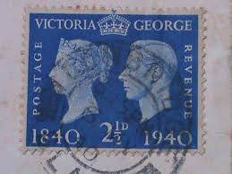 |
| eBay | GB KGVI 2 1/2d Overprint TANGIER Solo on PLAZA DONA ELVIRA Post Card to USA 1951 | eBay | 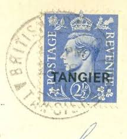 |
| Alamy | Albert vi hi-res stock photography and images - Alamy | 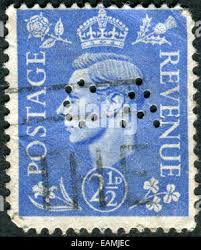 |
| eBay | Great Britain watermark sideways KGVI Sc 239a used, pulled perf check it out! | eBay | 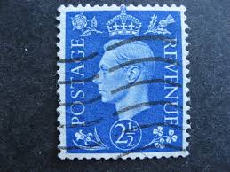 |
| eBay | Rare Blue stamp 2 1/2 Penny King George VI Great Britain (3) | eBay | 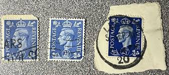 |
| PicClick UK | GREAT BRITAIN REVENUE Stamp 2 1/2 d 1941-42 King George VI UK Postage Used £1.17 - PicClick UK |  |
| Shutterstock | 2+ Thousand "george Vi" Royalty-Free Images, Stock Photos & Pictures | Shutterstock | 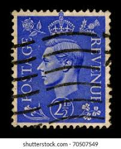 |